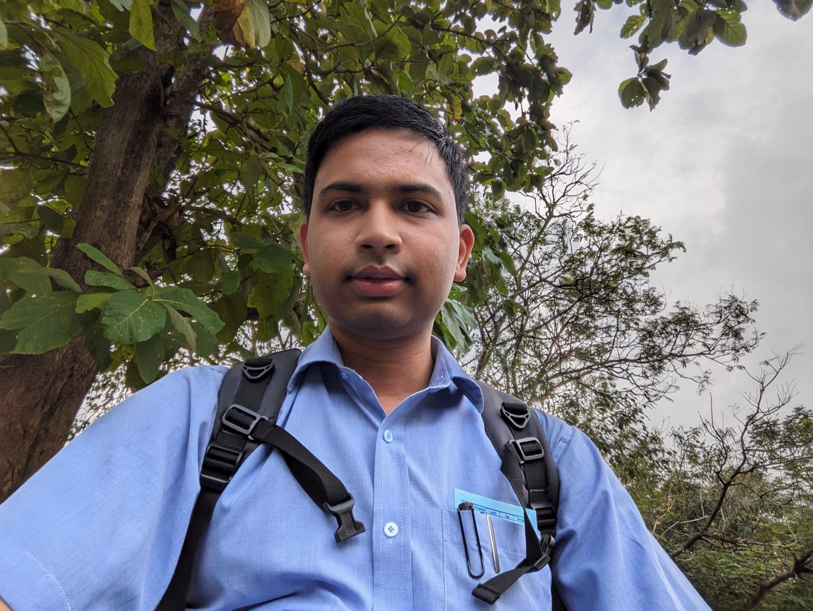

About Me

I completed my Ph.D. in Mathematics at the Indian Institute of Technology Delhi, where I was advised by Dr. Viswanathan Puthan Veedu.
My areas of specialization lie in Fractal Geometry, Approximation Theory, and the Theory of Fixed Points. My research primarily focuses on the intersection of iterative processes, measure-preserving transformations, and chaotic topological structures.
📍 Address: Department of Mathematics, Indian Institute of Technology Delhi, Hauz Khas, New Delhi, 110016, India
📧 Work Email: maz208239@iitd.ac.in
📧 Personal Email: ridipmedhi77@gmail.com
📱 Mobile: +91 9085844638
🔗 Researcher ID: ORCID Profile